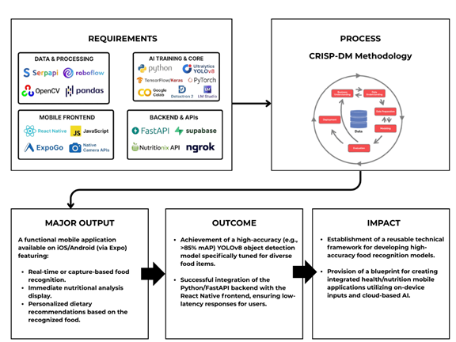

Project Overview
This thesis project focuses on integrating a CNN Model to enable personalized diet recommendations. It is an end-to-end AI pipeline designed to identify food items from images and provide instant, personalized nutritional feedback using Generative AI.
Key Features
- Object Detection: Implemented YOLOv8 to identify multiple food items in real-time.
- Generative AI Feedback: Engineered a Small Language Model (SLM) to analyze nutritional data output.
- Personalization: Generates dietary feedback based on the recognized food and user data.
- Mobile Target: Designed for deployment on mobile health applications.
System Preview (Mobile UI)
The gallery below auto-plays. Click arrows to navigate manually.
System Architecture
The project outlines a mobile application development process centered on food recognition using four key technical categories: Data & Processing, AI Training, Mobile Frontend, and Backend APIs.

Development Process
Role: Lead AI Engineer / Researcher
Methodology: CRISP-DM
Tech Stack:
Python React Native FastAPI Supabase YOLOv8 LM Studio NgrokThe development process involved extensive experimentation with various CNN architectures to optimize food item detection accuracy. The integration of Generative AI for nutritional feedback required fine-tuning the SLM to ensure contextually relevant responses.